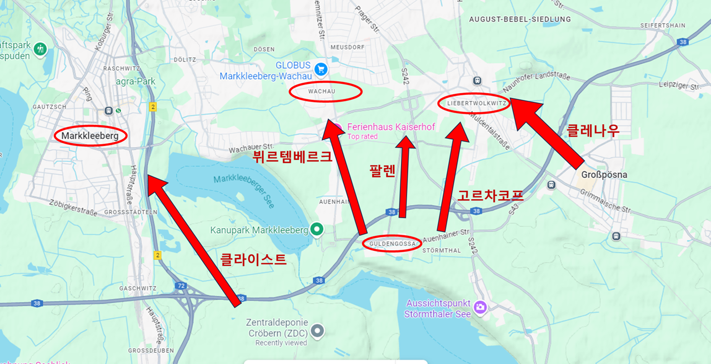
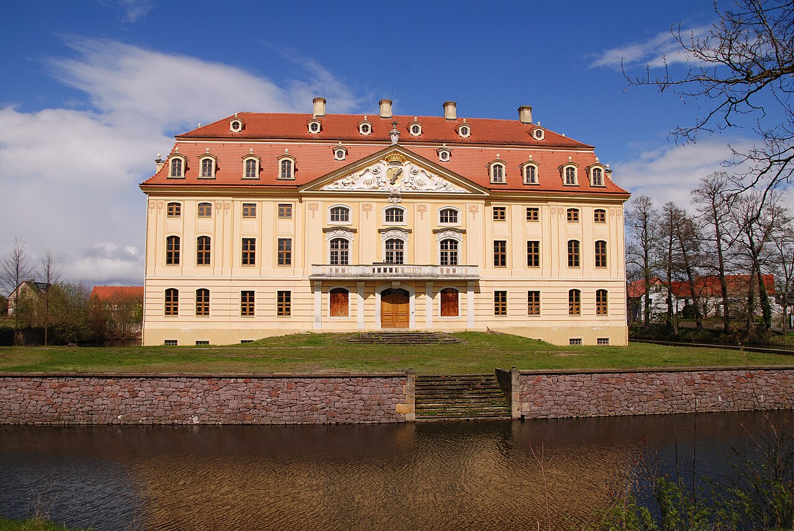
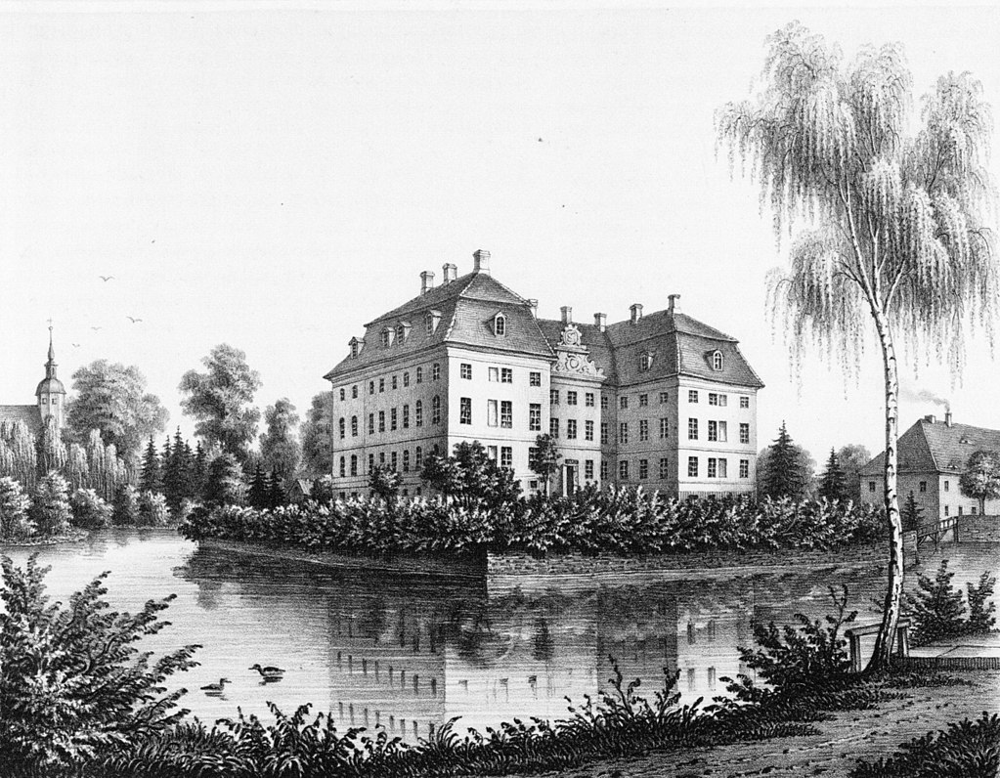
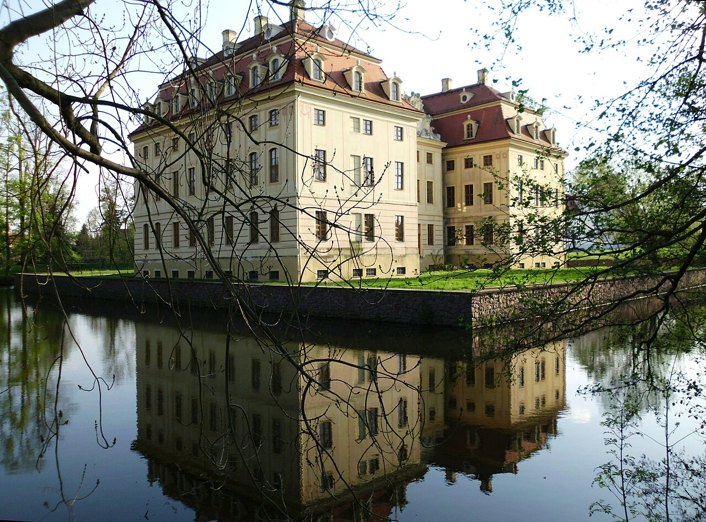
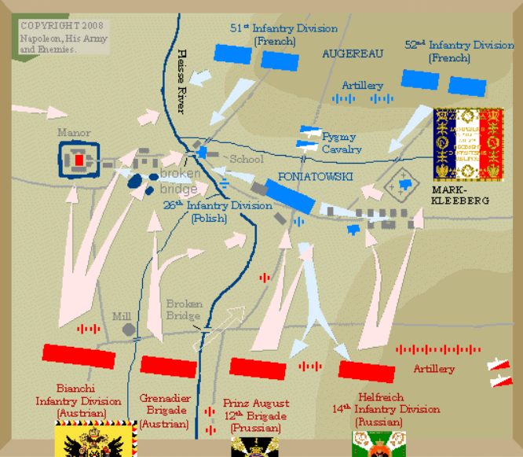
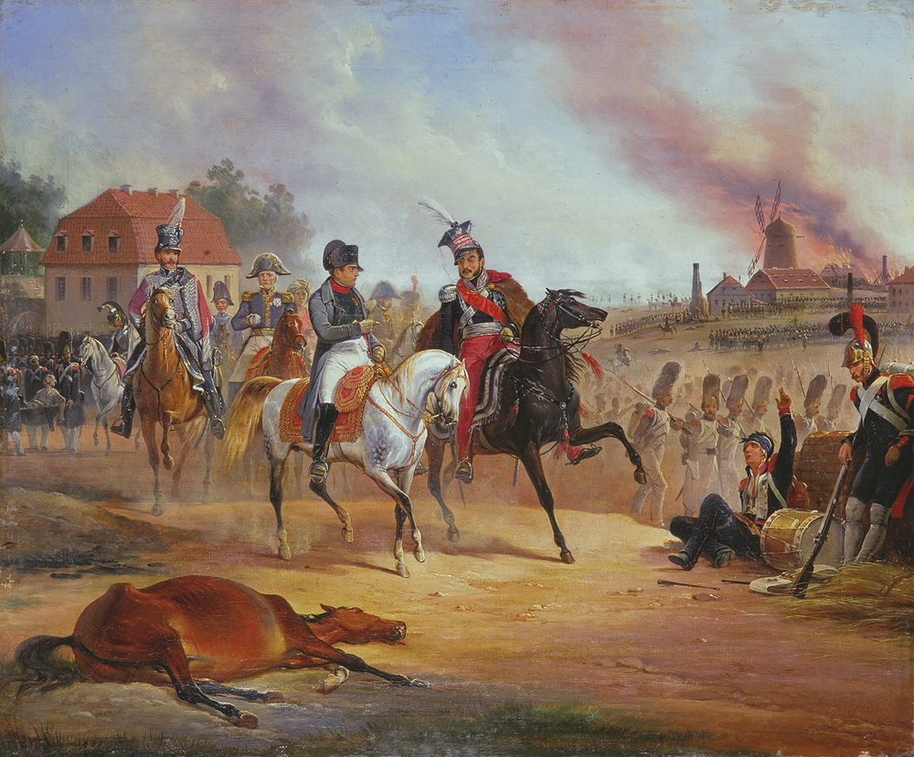

라이프치히 전투 (11) - 시간 약속의 오스트리아
게시: 2025-08-04T06:30:46+09:00
이미 언급된 것과 같이 보헤미아 방면군의 우익은 바클레이의 지휘를 받게 되어 있었는데, 바클레이는 그 제1선 공격의 계획을 비트겐슈타인에게 일임했습니다. 비트겐슈타인은 무척 상식적인 수준의 공격안을 세웠습니다. 제1선 공격에 참여할 병력을 크게 5갈래로 나누고 각각에게 공격 지점을 할당한 것입니다. 제1로 : 클라이스트(Kleist)는 마클리베르크를 공격 제2로 : 뷔르템베르크의 오이겐은 남동쪽에서 바하우를 공격 제3로 : 고르차코프(Gorchakov)는 남쪽에서 리버트볼크비츠를 공격 제4로 : 팔렌(Pahlen)은 바하우와 리버트볼크비츠 사이를 공격 제5로 : 클레나우(Klenau)는 동쪽에서 리버트볼크비츠를 공격 이중 제4로의 팔렌이 거느린 것은 약 5천 정도의 기병과 24문의 포병으로서 상대적으로 약한 보조 공격에 불과했고, 제1~제3로는 모두 1만 내외의 병력을 갖추고 있었습니다. 가장 강력한 것은 제5로였습니다. 여기엔 오스트리아군 위주로 편성된 3만3천의 병력과 80문의 포병이 배치되어 있었습니다. 그리고 제3,4,5로는 모두 리버트볼크비츠를 3면에서 공격하는 것으로 되어 있었습니다. 연합군의 진짜 노리는 지점이 바로 리버트볼크비츠라는 것을 쉽게 알 수 있었습니다.

(위의 5갈래 공격로를 표시한 지도입니다. 당시엔 저런 호수들이 없었다는 점은 감안하시고 보십시요.) 왜 보헤미아 방면군의 공격이 리버트볼크비츠로 집중되었을까요? 일단 거기에 그 일대에서 가장 높은 고지인 갈건베르크(Galgenberg, 교수대 언덕이라는 뜻)가 있었기 때문이었습니다. 인간은 중력의 지배를 받으며 사는 존재이므로 고지를 차지한다는 것은 전황 관측이든 포격에 의한 제압이든 모든 목적과 상황에 있어 더 유리한 위치에 서게 된다는 뜻이었습니다. 바로 그런 점 때문에 나폴레옹도 바로 그 갈건베르크에 사령부를 차려놓고 있었습니다. 게다가 리버트볼크비츠는 뮈라가 지키고 있는 라이프치히 남쪽 전선의 맨 좌측 끝이었습니다. 따라서 측면으로 우회하여 포위하기도 좋았고, 일단 거기만 제압하고나면 나머지 전선을 측면에서 밀어붙이기에도 딱 좋았습니다. 리버트볼크비츠가 그렇게 중요한 곳이었기에, 바클레이는 비트겐슈타인의 제1선 이외에도 약 1만 규모의 러시아 척탄병 군단과 흉갑기병 여단을 34문의 포병과 함께 예비대로서 그루나(Gruhna) 남쪽에 대기시켜놓고 있었습니다. 그리고 슈바르첸베르크가 원래 보헤미아 방면군의 좌익에 배치하려고 했으나, 러시아군의 강력한 항의를 받고 마지못해 우익으로 배치하기로 한 러시아-프로이센 근위대 및 예비 기병대의 병력 약 2만4천과 포병대 243문이 리버트볼크비츠 남쪽 14km 정도 지점인 뢰타(Rötha)로 이동하고 있었습니다. 이들은 10월 16일 아침 7시부터 각자 맡은 공격지점을 향해 전진하기로 되어 있었지만, 이 공격은 8시로 연기되어야 했습니다. 15일 밤과 16일 새벽까지 차가운 비가 거센 바람과 함께 쏟아졌는데, 비는 새벽에 그쳤지만 아침 7시까지도 안개가 자욱하게 끼어 앞을 제대로 볼 수가 없기 때문이었습니다. 해가 뜨고 안개가 옅어지자 8시부터 전진을 시작했습니다. 이들은 1시간 뒤인 9시부터 뮈라의 방어선과 본격적인 충돌을 시작했습니다. 이제 나폴레옹의 운명을 결정지을 라이프치히 전투가 드디어 시작된 것입니다. 생각보다 늦게 전투에 본격적으로 뛰어든 것은 나폴레옹도 마찬가지였습니다. 그는 비트겐슈타인의 공격이 본격적으로 시작된 9시경에 리버트볼크비츠 마을 바로 서쪽에 위치한 갈건베르크 언덕에 도착하여, 지난 밤을 바하우 성(Schloss Wachau)에서 보낸 뒤 연합군이 몰려온다는 소식에 역시 갈건베르크로 올라온 뮈라와 만났습니다.

(바하우 성(Schloss Wachau)입니다. 이 자리에는 13세기부터 해자로 보호된 귀족의 성이 존재했다고 하는데, 현재 존재하는 이 건물은 1730년부터 짓기 시작하여 1741년 완공된 쇤펠트(von Schönfeld) 가문의 바로크식 궁전입니다.)

(19세기 중반 이전에 그려진 바하우 성의 모습입니다.)

(위의 그림과 동일한 각도로 촬영된 바하우 성의 후면과 좌측 날개의 모습입니다.) 비트겐슈타인의 공격은 나폴레옹과 뮈라가 예상했던 것보다 훨씬 더 강력했습니다. 그 결과, 호기있게 갈건베르크에 올랐던 나폴레옹은 거기에서 내려와 북쪽으로 3km 넘게 떨어진 양목장인 모이스도르프(Meusdorf)까지 보기 흉하게 후퇴해야 했습니다. 까딱하다간 나폴레옹 사령부까지 적군에게 유린당할까 우려되었기 때문이었습니다. 먼저, 클라이스트가 이끄는 제1로가 공격했던 마클리베르크는 가장 규모가 작은 포니아토프스키의 제8군단이 지키고 있었기 때문에 가장 쉽게 뚫렸습니다. 특히, 클라이스트의 공격은 플라이서강을 사이에 두고 메르펠트(Merveldt)의 오스트리아군 제2군단, 그러니까 보헤미아 방면군 좌익의 공격과 합세하는 형태로 이루어졌으므로 플라이서강 양쪽을 모두 지켜야 했던 포니아토프스키의 8천 남짓한 폴란드 군단으로서는 2개 군단의 공격을 제대로 막아낼 수가 없었습니다. 폴란드 병사들이 죽어라 열심히 싸웠고, 포니아토프스키가 패주하는 폴란드 병사들을 독려하여 되돌려 세우는 등 분전했으나, 일단 마클리베르크 마을은 클라이스트에게 점령당하고 말았습니다.

(포니아토프스키가 마클리베르크 일대를 지키기 위해 분전하는 모습입니다. 나폴레옹은 이곳이 플라이서강에 인접하였으므로 지키기 쉽다고 생각했고 실제로도 그렇긴 했습니다만, 그래도 2개 군단을 상대하기는 어려웠을 것입니다.)

(라이프치히에서 나폴레옹과 말 위에서 전황을 이야기하는 포니아토프스키입니다. 저기가 언제 어디서의 상황인지는 사실 중요하지 않습니다. 저 그림은 야누아리 수호돌스키(January Suchodolski)라는 폴란드 화가가 그린 것인데, 그는 1813년 당시 16살로서 바르샤바의 '영국 호텔'(Hotel Angielski)에서 문지기 노릇을 하고 있었으므로 저 그림은 그냥 상상화이기 때문입니다. 영국 호텔은 나폴레옹이 모스크바에서 몰래 돌아올 때 투숙했던 바로 그 호텔인데, 실제로 그때 수호돌스키가 그 호텔에 근무하고 있었습니다.) 뷔르템베르크의 오이겐이 이끄는 제2로 공격도 나름 성공적이었습니다. 바하우 마을을 공격한 이들의 병력은 1만이 채 되지 않는 소규모였으나, 이곳을 지키던 빅토르의 제2군단도 많은 수는 아니었습니다. 빅토르의 병사들은 쉽게 밀려나지 않고 마을 골목에서 러시아군과 치열하게 전투를 벌였으나, 뷔르템베르크는 9시30분 경 바하우 마을 일부를 점령하는데 성공했습니다. 그런데 딱 거기까지였습니다. 가장 중요한 리버트볼크비츠를 향한 제3,4,5로의 공격은 모조리 제대로 진행되질 않았습니다. 이 3개로의 공격이 모두 한 곳, 즉 리버트볼크비츠를 노린 것이므로 그 효과를 극대화하려면 각각의 공격대가 시간을 맞춰 한꺼번에 목표물을 집중공격해야 했습니다. 그런데 전통적으로 느림보였던 오스트리아군에게 시간을 정확히 맞추라는 것은 무리한 부탁이었나 봅니다. 그로스푀스나(Großpösna)에서 오전 8시에 출발해야 했던 클레나우의 오스트리아군은 무슨 이유에서인지 무려 2시간이나 늦은 오전 10시에나 진격을 시작했습니다. 러시아인들이 아무리 참을성이 많은 민족이라고 해도, 당장 옆에서 대포가 울려대고 총검이 번쩍거리는 전투가 벌어지는 마당에 2시간은 너무나 긴 시간이었습니다. 클레나우를 기다리던 고르차코프의 러시아군은 클레나우의 오스트리아군을 기다리지 못하고 결국 먼저 공격을 시작했습니다. 전날부터 갈건베르크에서 보헤미아 방면군의 배치를 지켜보던 나폴레옹은 그들의 주목표가 리버트볼크비츠라는 것을 당연히 파악하고 있었습니다. 여기에는 로리스통의 제5군단이 배치되어 있었는데, 나폴레옹은 리버트볼크비츠의 방어를 위해 갈건베르크 고지의 이점을 최대한 살려, 여기에 강력한 포병대를 집중배치해 놓았습니다. 클레나우의 제5로에 비하면 1/3도 안되는 병력을 거느린 고르차코프의 제3로는 그랑다르메의 강력한 포격을 뚫지 못하고 그만 물러서야 했습니다. 기병 위주라서 상대적으로 더 빈약한 병력만 거느리고 있던 팔렌의 제4로도 이 포격 탓에 감히 접근할 수가 없었습니다. 한참 늦게서야 나타난 클레나우는 막강한 머릿수를 앞세워 리버트볼크비츠로 서서히 접근했는데, 그 북쪽인 홀츠하우젠(Holzhausen)에서 큰 규모의 적군이 자신의 측면으로 몰려오는 것이 목격되었습니다. 나폴레옹이 역으로 보헤미아 방면군의 측면을 공격하기 위해 준비해두었던 막도날의 제11군단이었습니다. 이렇게 보헤미아 방면군의 작전은 처음부터 빗나가기 시작했습니다. 그렇게 우왕좌왕하는 적군의 모습을 지켜보던 나폴레옹의 회심의 미소를 띠고 있었을까요? 나폴레옹은 그 나름대로 계획이 마구 어긋나고 있었습니다. Source : The Life of Napoleon Bonaparte, by William Milligan Sloane Napoleon and the Struggle for Germany, by Leggiere, Michael V With Napoleon's Guns by Colonel Jean-Nicolas-Auguste Noël https://www.britannica.com/event/Napoleonic-Wars/Dispositions-for-the-autumn-campaign https://en.wikipedia.org/wiki/Battle_of_Leipzig https://www.historyofwar.org/articles/battles_leipzig_16_october.html https://warhistory.org/@msw/article/leipzig-battle-of-the-nations https://www.napolun.com/mirror/napoleonistyka.atspace.com/Leipzig_battle.htm https://de.wikipedia.org/wiki/G%C3%BCldengossa https://de.wikipedia.org/wiki/Barockschloss_Wachau https://en.wikipedia.org/wiki/January_Suchodolski